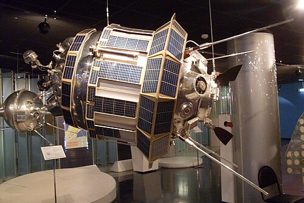
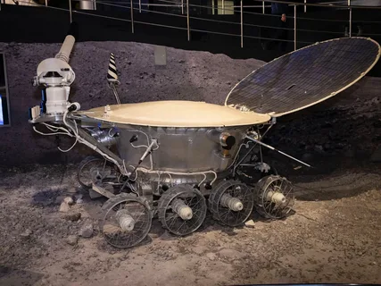
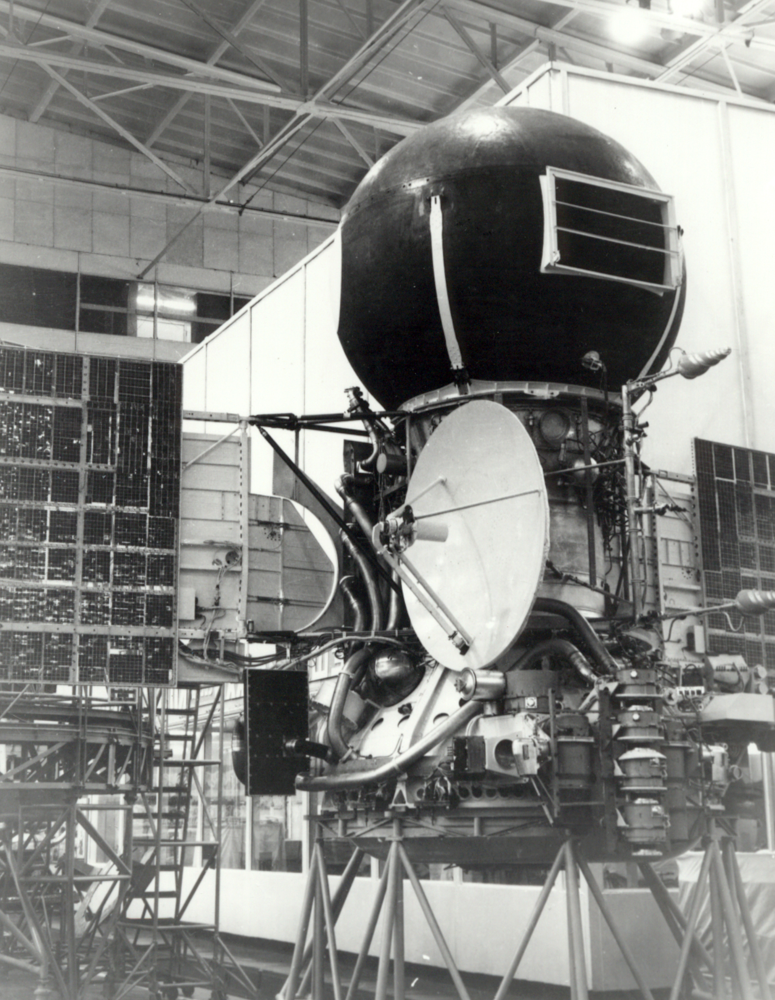
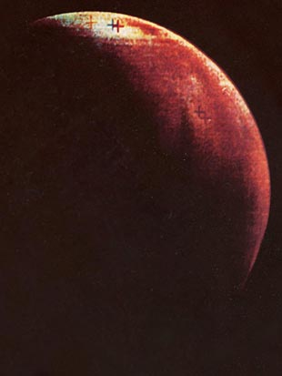

Прорыв в другие миры
Пока одни прокладывали дорогу человеку на орбите, автоматические станции устремились к другим мирам. Советская программа исследования дальнего космоса началась практически одновременно с пилотируемой — и сразу с амбициозных задач, которые казались фантастикой даже учёным.
Луна: от первого удара до лунохода
2 января 1959 года стартовала «Луна-1». Она должна была попасть в Луну, но прошла рядом — и стала первым в мире искусственным спутником Солнца, навсегда покинувшим земную орбиту. Уже через девять месяцев, 14 сентября 1959 года, «Луна-2» достигла цели, доставив на поверхность вымпел с гербом Советского Союза. А ещё через месяц «Луна-3» сделала то, что не удавалось никому за всю историю человечества: впервые сфотографировала обратную сторону Луны.

За первой сенсацией последовала настоящая технологическая революция. 3 февраля 1966 года «Луна-9» впервые в истории совершила мягкую посадку нa другое небесное тело и передала на Землю панораму лунной поверхности. В том же году «Луна-10» стала первым искусственным спутником Луны. А 24 сентября 1970 года случилось то, что иначе как чудом не назовёшь: автоматическая станция «Луна-16» сама взяла грунт и вернулась с ним на Землю.
Кульминацией лунной программы стал «Луноход-1», доставленный на поверхность 17 ноября 1970 года. Этот восьмиколёсный аппарат, управляемый операторами с Земли, проработал в три раза дольше расчётного срока, прошёл 10,5 километра и передал 25 тысяч фотографий.
Венера: увидеть сквозь облака
К Венере летать было сложнее. Её плотная атмосфера скрывала поверхность, и никто не знал, что ждёт аппараты. Первые попытки были неудачными, но упорство принесло плоды.

1 марта 1966 года «Венера-3» впервые в мире достигла поверхности другой планеты, доставив вымпел СССР. Правда, связь с аппаратом прервалась ещё до входа в атмосферу — но сам факт того, что земной предмет долетел до Венеры, потряс мир. Через год «Венера-4» вошла в атмосферу и полтора часа опускалась на парашюте, передавая данные о составе и давлении. Выяснилось, что давление у поверхности достигает 90 атмосфер, а температура — 475 градусов.
15 декабря 1970 года «Венера-7» совершила первую в мире мягкую посадку на Венеру и передала информацию с поверхности. А в октябре 1975 года «Венера-9» и «Венера-10» сделали невозможное: передали на Землю первые в истории фотографии поверхности другой планеты.
Марс: красная планета открывается
Марс оказался самым невезучим. Из двадцати отправленных к нему советских аппаратов полностью успешных не было ни одного — лишь несколько частично. Но даже они вошли в историю.

27 ноября 1971 года станция «Марс-2» достигла поверхности Красной планеты — пусть и жёстко, разбившись при посадке, но это был первый рукотворный объект на Марсе. А 2 декабря 1971 года «Марс-3» впервые в истории совершил мягкую посадку. К сожалению, связь прервалась через 14 секунд — атмосферные помехи или пылевая буря не позволили передать данные. Но сам факт того, что советский аппарат сел на Марс и успел отправить хоть что-то, остался в истории.
«Цена, заплаченная за эти успехи, была, конечно, непомерно высока. К Луне запустили 58 аппаратов, из них полностью успешных — лишь 16. К Венере — 29, из них удачных — 12. К Марсу — 20, и ни одного полностью успешного. Но именно эти станции дали нам первые знания о других мирах».